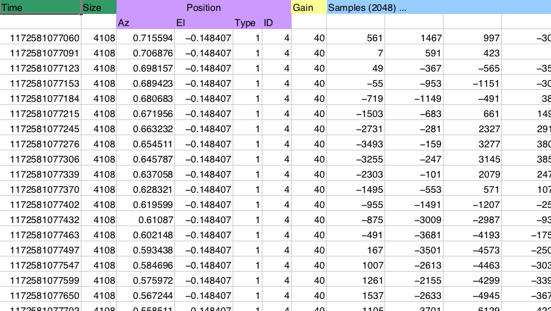

NumPy MedKit
A first-aid kit for the numerically adventurous

Stéfan van der Walt, University of Stellenbosch
- Introduce yourself
- University of Stellenbosch, Department of Applied Mathematics
- Background is in engineering
- Developing NumPy is my PhD procrastination project
- Priviledged to be here with such talented people, many of whom could have been up here instead of me!, looking very much forward to the rest of this conference
- Level of tutorial: "advanced track", but rather intermediate track
- Advanced topics may be of use to a select few, while I feel that these intermediate topics, while certainly not trivial, are common enough to warrant our attention.
- Format of tutorial: challenge response
- Read title, describe context, proceed to next slide
>>> import numpy as np
>>> np.random.seed([1, 2, 3])
A look inside our MedKit
Overview
Broadcasting
- It is fundamental to NumPy array handling
- Important, because it is so frequently used
- ... and abused!
- Not a silver bullet to solve every problem (memory consumption)
- Dispell some common misconceptions surrounding for-loops (more on that later)
Overview
Structured arrays
- Common problem in industry: reading strange binary formats
- NumPy makes it easy!
- Also a very convenient way of organising data
- Like columns in a spreadsheet
Overview
Views
- Often, we repeatedly operate on the same values
- e.g. convolution, sliding window
- broadcasting
- Views are a powerful way of reorganising data, without
making copies
- Especially useful for large data-sets
- Recently, Robert Kern added stride_tricks, with broadcast_arrays, as_strided.
Overview
Sub-classing
- Before, sub-classing arrays used to be difficult and error-prone
- NumPy makes it a lot easier
- Especially useful for adding meta-data, to be carried along
with operations
- e.g. masked arrays, EXIF photographic tags, units, etc.
- Maybe a meta-data dictionary will be available in 2.0
Overview
(We'll skip this today)
Optimisation tricks
- Talk about a few common pitfalls
- Improving memory usage using for-loops
- Profiling performance
- Cython, ctypes example
Overview
Gems
- If there's time left, chat about some hidden beauties:
- np.save and np.load
- np.fromregex
- np.lib.Arrayterator
- np.emath -- sqrt(-1)
- np.unravel_index
- np.lexsort and structured arrays
- np.iinfo
- np.issubdtype
- np.linalg.matrix_power
Broadcasting
- Used to combine arrays of differing sizes
- Simplest example: scalar broadcasting
>>> x = np.arange(4)
>>> x
array([0, 1, 2, 3])
>>> x + 3
array([3, 4, 5, 6])

Broadcasting in 2D
>>> x = np.zeros((3,4))
>>> y = np.zeros((3,1))
>>> (x + y).shape
(3, 4)

Broadcasting in 2D
Creating a grid of values:
>>> x, y = np.ogrid[1:10, 1:5]
>>> x
array([[1],
[2],
[3],
[4],
[5],
[6],
[7],
[8],
[9]])
>>> y
array([[1, 2, 3, 4]])
>>> x + 1j*y
array([[ 1.+1.j, 1.+2.j, 1.+3.j, 1.+4.j],
[ 2.+1.j, 2.+2.j, 2.+3.j, 2.+4.j],
[ 3.+1.j, 3.+2.j, 3.+3.j, 3.+4.j],
[ 4.+1.j, 4.+2.j, 4.+3.j, 4.+4.j],
[ 5.+1.j, 5.+2.j, 5.+3.j, 5.+4.j],
[ 6.+1.j, 6.+2.j, 6.+3.j, 6.+4.j],
[ 7.+1.j, 7.+2.j, 7.+3.j, 7.+4.j],
[ 8.+1.j, 8.+2.j, 8.+3.j, 8.+4.j],
[ 9.+1.j, 9.+2.j, 9.+3.j, 9.+4.j]])
Broadcasting in 2D
Timing two different approaches:
>>> def grid_old_way():
... x, y = np.mgrid[1:100, 1:100]
... return x + 1j*y
>>> def grid_new_way():
... x, y = np.ogrid[1:100, 1:100]
... return x + 1j*y
>>> timeit grid_new_way()
1000 loops, best of 3: 301 µs per loop
>>> timeit grid_old_way()
1000 loops, best of 3: 1.44 ms per loop
Broadcasting in 3D
>>> x = np.zeros((3, 5))
>>> y = np.zeros(8)
>>> (x[..., None] + y).shape
(3, 5, 8)

Broadcasting in N-D
Compare dimensions, starting from last
Match when either dimension is one or None, or if dimensions are equal
Scalar 2D 3D No go ( ,) (3, 4) (3, 5, 1) (3, 5, 2) (3,) (3, 1) ( 8) ( 8) ---- ------ ---------- --------- (3,) (3, 4) (3, 5, 8) XXX
In action: vector quantisation
- Code book: k M-dimensional data-points, as rows of (k, N) array
- Given another set of data points of shape (m, N), for each find the closest point in the code book
>>> book = np.arange(1000).reshape(100,10)
>>> match = np.array([np.arange(100, 110),
... np.arange(155, 165),
... np.arange(173, 183)])
>>> for v in match:
... min_dist = np.inf
... for d in book:
... dist = np.sum((v - d)**2)
... if dist < min_dist:
... best_match = d
... min_dist = dist
... print best_match, min_dist
[100 101 102 103 104 105 106 107 108 109] 0
[150 151 152 153 154 155 156 157 158 159] 250
[170 171 172 173 174 175 176 177 178 179] 90
Solution using broadcasting
>>> distances = (book - match[:, None, :])
>>> distances *= distances # square in-place
>>> distances = distances.sum(axis=2)
>>> chosen = distances.argmin(axis=1)
>>> book[chosen]
array([[100, 101, 102, 103, 104, 105, 106, 107, 108, 109],
[150, 151, 152, 153, 154, 155, 156, 157, 158, 159],
[170, 171, 172, 173, 174, 175, 176, 177, 178, 179]])
>>> distances[range(len(match)), chosen]
array([ 0, 250, 90])
Not ideal -- the temporary array created has a large memory footprint:
( 100, 10) (3, 1, 10) ------------ (3, 100, 10)
Usually, the number of vectors compared would be much greater, which exacerbates the problem.
Interlude: Indexing
Date: Wed, 16 Jul 2008 16:45:37 -0500
From: <Jack.Cook@>
To: <numpy-discussion@scipy.org>
Subject: [Numpy-discussion] Numpy Advanced
Indexing Question
Greetings,
I have an I,J,K 3D volume of amplitude values
at regularly sampled time intervals. I have an
I,J 2D slice which contains a time (K) value at
each I, J location. What I would like to do is
extract a subvolume at a constant +/- K window
around the slice. Is there an easy way to do
this using advanced indexing or some other
method? Thanks in advanced for your help.
- Jack
Indexing
Robert Kern responds:
cube[:, :, K-half_width:K+half_width]
But Jack's problem turned out to be a bit more tricky:
I can understand how this works if K is a constant
time value but in my case K varies at each
location in the two-dimensional slice. In other
words, if I was doing this in a for loop I would
do something like this
for i in range(numI):
for j in range(numJ):
k = slice(i,j)
trace = cube(i,j,k-half_width:k+half_width)
# shove trace in sub volume
Indexing
Indexing
First part of Robert's answer, shortened for tutorial purposes:
It would be great if you could just use slices
for the first two axes:
cube[:, :, slice + numpy.arange(-half_width,
half_width)]
but the semantics of that are a bit different
for reasons I can explain later, if you want.
Why doesn't this work?
Indexing
Diagonal
| 1 | 2 | 3 |
| 4 | 5 | 6 |
| 7 | 8 | 9 |
- There are two ways of indexing NumPy arrays, using
- slices and scalars
- or ndarrays (known as fancy indexing)
>>> x = np.arange(9).reshape((3,3))
>>> x
array([[0, 1, 2],
[3, 4, 5],
[6, 7, 8]])
>>> x[:, [0, 1, 2]]
array([[0, 1, 2],
[3, 4, 5],
[6, 7, 8]])
>>> np.array([x[:, 0], x[:, 1], x[:, 2]])
array([[0, 3, 6],
[1, 4, 7],
[2, 5, 8]])
Indexing
Safety First!
Prepare Your Foil Deflector Beanies
Two-step process to predict the outcome:
- Broadcast all index arrays against one another
- Use the dimensions of the slices as-is
>>> x = np.random.random((15,12,16,3))
>>> index_one = np.array([[0, 1], [2, 3], [4, 5]])
>>> index_one.shape
(3, 2)
>>> index_two = np.array([[0, 1]])
>>> index_two.shape
(1, 2)
x[5:10, index_one, :, index_two].shape
Indexing
>>> x = np.random.random((15,12,16,3))
>>> index_one = np.array([[0, 1], [2, 3], [4, 5]])
>>> index_one.shape
(3, 2)
>>> index_two = np.array([[0, 1]])
>>> index_two.shape
(1, 2)
Broadcast index_one and index_two:
(3, 2) # shape of index_one (1, 2) # shape of index_two ------ (3, 2)
Keeping this in mind, we may just be able to predict the following output:
>>> x[5:10, index_one, :, index_two].shape
(3, 2, 5, 16)
Indexing: Solve the problem
TIP: Use numpy.newaxis to change array dimensions to appease the Big Broadcaster.
>>> ni, nj, nk = (10, 15, 20)
# Make a fake data cube such that cube[i,j,k] == k for all i,j,k.
>>> cube = np.empty((ni,nj,nk), dtype=int)
>>> cube[:,:,:] = np.arange(nk)[np.newaxis, np.newaxis, :]
# Pick out a random fake horizon in k.
>>> kslice = np.random.randint(5, 15, size=(ni, nj))
>>> kslice
array([[ 6, 9, 11, 10, 9, 10, 8, 13, 10, 12, 13, 9, 12, 5, 6],
[ 7, 9, 6, 14, 11, 8, 12, 7, 12, 9, 7, 9, 8, 10, 13],
[10, 14, 9, 13, 12, 11, 13, 6, 11, 9, 14, 12, 6, 8, 12],
[ 5, 11, 8, 14, 10, 10, 10, 9, 10, 5, 7, 11, 9, 13, 8],
[ 7, 8, 8, 5, 13, 9, 11, 13, 13, 12, 13, 11, 12, 5, 11],
[11, 9, 13, 14, 6, 7, 6, 14, 10, 6, 8, 14, 14, 14, 14],
[10, 12, 6, 7, 8, 6, 10, 9, 13, 6, 14, 10, 12, 10, 10],
[10, 12, 10, 9, 11, 14, 9, 6, 7, 13, 6, 11, 8, 11, 8],
[13, 14, 7, 14, 6, 14, 6, 8, 14, 7, 14, 12, 8, 5, 10],
[13, 5, 9, 7, 5, 9, 13, 10, 13, 7, 7, 9, 14, 13, 11]])
>>> half_width = 3
Indexing
# These two replace the empty slices for the first two axes.
>>> idx_i = np.arange(ni)[:, np.newaxis, np.newaxis]
>>> idx_j = np.arange(nj)[np.newaxis, :, np.newaxis]
# This is the substantive part that picks out the window
>>> idx_k = kslice[:, :, np.newaxis] + \
... np.arange(-half_width, half_width+1) # (10, 15, 7)
cube[idx_i, idx_j, idx_k]
Apply the rule -- broadcast array indices, then add slices (but there are no slices in this case):
(ni, 1, 1 ) # idx_i (1 , nj, 1 ) # idx_j (ni, nj, 2*half_width + 1 ) # idx_k --------------------------- (ni, nj, 7)
Phew, tough one. Moving on to easier things...
Indexing
>>> smallcube = cube[idx_i,idx_j,idx_k]
>>> smallcube.shape
(10, 15, 7)
# Now verify that our window is centered on kslice everywhere:
>>> smallcube[:,:,3]
array([[ 6, 9, 11, 10, 9, 10, 8, 13, 10, 12, 13, 9, 12, 5, 6],
[ 7, 9, 6, 14, 11, 8, 12, 7, 12, 9, 7, 9, 8, 10, 13],
[10, 14, 9, 13, 12, 11, 13, 6, 11, 9, 14, 12, 6, 8, 12],
[ 5, 11, 8, 14, 10, 10, 10, 9, 10, 5, 7, 11, 9, 13, 8],
[ 7, 8, 8, 5, 13, 9, 11, 13, 13, 12, 13, 11, 12, 5, 11],
[11, 9, 13, 14, 6, 7, 6, 14, 10, 6, 8, 14, 14, 14, 14],
[10, 12, 6, 7, 8, 6, 10, 9, 13, 6, 14, 10, 12, 10, 10],
[10, 12, 10, 9, 11, 14, 9, 6, 7, 13, 6, 11, 8, 11, 8],
[13, 14, 7, 14, 6, 14, 6, 8, 14, 7, 14, 12, 8, 5, 10],
[13, 5, 9, 7, 5, 9, 13, 10, 13, 7, 7, 9, 14, 13, 11]])
>>> (smallcube[:,:,3] == kslice).all()
True
Structured Arrays
Structured Arrays
Reading this in most languages requires somewhat messy code. Not too bad, but not very pretty either:
while ((count > 0) && (n <= NumPoints))
% get time - I8 [ms]
[lw, count] = fread(fid, 1, 'uint32');
if (count > 0) % then carry on
uw = fread(fid, 1, 'int32');
t(1,n) = (lw+uw*2^32)/1000;
% get number of bytes of data
numbytes = fread(fid, 1, 'uint32');
% read sMEASUREMENTPOSITIONINFO (11 bytes)
m(1,n) = fread(fid, 1, 'float32'); % az [rad]
m(2,n) = fread(fid, 1, 'float32'); % el [rad]
m(3,n) = fread(fid, 1, 'uint8'); % region type
m(4,n) = fread(fid, 1, 'uint16'); % region ID
g(1,n) = fread(fid, 1, 'uint8');
numsamples = (numbytes-12)/2; % 2 byte integers
a(:,n) = fread(fid, numsamples, 'int16');
Structured Arrays
The NumPy solution:
dt = np.dtype([('time', np.uint64),
('size', np.uint32),
('position', [('az', np.float32),
('el', np.float32),
('region_type', np.uint8),
('region_ID', np.uint16)]),
('gain', np.uint8),
('samples', (np.int16,2048))])
data = np.fromfile(f, dtype=dt)
Access this data using dictionary-like syntax:
data['position']['az']
Views and strided tricks
Date: Wed, 16 Jul 2008 16:45:37 -0500
From: Amir
To: <numpy-discussion@scipy.org>
Subject: [Numpy-discussion] interleaved
indexing
A very beginner question about indexing: let x be
an array where n = len(x). I would like to create
a view y of x such that:
y[i] = x[i:i+m,...] for each i and a fixed m << n
so I can do things like numpy.cov(y). With n
large, allocating y is a problem for
me. Currently, I either do for loops in cython or
translate operations into correlate() but am
hoping there is an easier way, maybe using fancy
indexing or broadcasting. Memory usage is
secondary to speed, though.
Views and strided tricks
Given input data:
>>> x = np.arange(20).reshape([4, 5])
>>> x
array([[ 0, 1, 2, 3, 4],
[ 5, 6, 7, 8, 9],
[10, 11, 12, 13, 14],
[15, 16, 17, 18, 19]])
What he wants is a view like this (assume m == 2):
array([[[ 0, 1, 2, 3, 4],
[ 5, 6, 7, 8, 9]],
[[ 5, 6, 7, 8, 9],
[10, 11, 12, 13, 14]],
[[10, 11, 12, 13, 14],
[15, 16, 17, 18, 19]]])
Views and strided tricks
To do this, we need to know the following terms:
- shape
- The dimensions of the array along each axis.
- strides
- The number of bytes of memory that must be skipped to progress to the next item along a certain dimension.
>>> x.strides
(20, 4)
>>> np.int32().itemsize
4
Views and strided tricks
array([[[ 0, 1, 2, 3, 4],
[ 5, 6, 7, 8, 9]],
[[ 5, 6, 7, 8, 9],
[10, 11, 12, 13, 14]],
[[10, 11, 12, 13, 14],
[15, 16, 17, 18, 19]]])
We now need to manipulate the array shape and strides. The output shape must be (3, 2, 5), i.e. 3 items, each containing two rows (m == 2), and each row having 5 elements.
The strides need to change from (20, 4), to (20, 20, 4). Each item in the new output array starts at a new row, that each row consists of 20 bytes (5 elements of 4 bytes each), and each element occupies 4 bytes (int32).
Views and strided tricks
Let's do it:
>>> from numpy.lib import stride_tricks
>>> stride_tricks.as_strided(x, shape=(3, 2, 5),
... strides=(20, 20, 4))
array([[[ 0, 1, 2, 3, 4],
[ 5, 6, 7, 8, 9]],
[[ 5, 6, 7, 8, 9],
[10, 11, 12, 13, 14]],
[[10, 11, 12, 13, 14],
[15, 16, 17, 18, 19]]])
Views and strided tricks
Or the old way (which is basically what as_strided does under the hood):
>>> d = dict(x.__array_interface__)
>>> d['shape'] = (3, 2, 5)
>>> d['strides'] = (20, 20, 4)
>>> class Arr:
... __array_interface__ = d
... base = x
>>> np.array(Arr())
array([[[ 0, 1, 2, 3, 4],
[ 5, 6, 7, 8, 9]],
[[ 5, 6, 7, 8, 9],
[10, 11, 12, 13, 14]],
[[10, 11, 12, 13, 14],
[15, 16, 17, 18, 19]]])
Subclassing
Two important methods:
- __new__
- Allocated memory for ndarray object; only called when new array is created (i.e. not view).
- __array_finalize__
- Called to setup an array or view, whether or not __new__ was invoked.
Subclassing
class InfoArray(np.ndarray):
def __new__(subtype, data, info=None, dtype=None, copy=False):
subarr = np.array(data, dtype=dtype, copy=copy)
subarr = subarr.view(subtype)
if info is not None:
subarr.info = info
elif hasattr(data, 'info'):
subarr.info = data.info
return subarr
def __array_finalize__(self, obj):
self.info = getattr(obj, 'info', {})
In conclusion
I would like to thank
- Enthought, for generously sponsoring my visit, and for being one of the pillars of this community
- My study advisor, Ben Herbst, who doesn't ask too many questions when I disappear for a month
- You, for taking the time to attend this talk